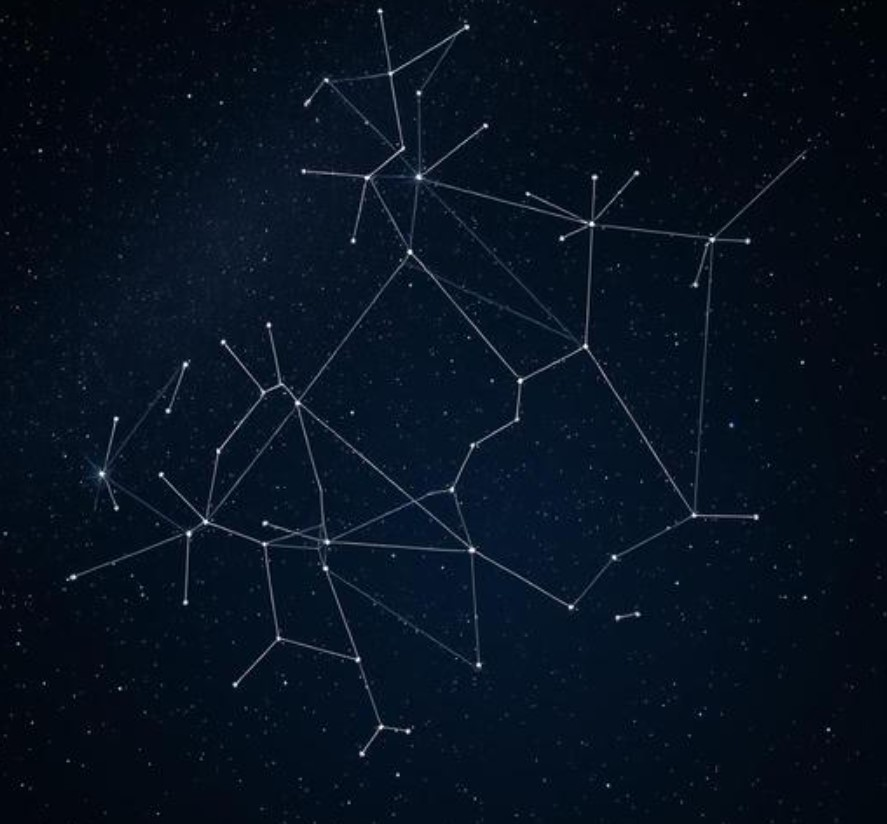

Civilizations separated by oceans, with no possible contact between them, independently looked up at the same random scatter of stars and did the exact same thing: drew imaginary lines between them and turned them into stories. Greek astronomers saw hunters and bears. Aboriginal Australian astronomers saw an emu in the dark dust lanes of the Milky Way. Polynesian navigators built entire wayfinding systems out of personally meaningful star groupings. None of these traditions copied each other. All of them did essentially the same thing.

Why This Isn't a Coincidence
Cognitive scientists who study pattern recognition have a name for exactly this tendency: pareidolia, the brain's strong inclination to find familiar shapes (faces, animals, figures) in random visual noise. It's the same mechanism behind seeing a face in a cloud or in the moon. Applied to a sky full of randomly scattered points of light, pareidolia means humans were essentially guaranteed to start connecting dots into shapes, regardless of culture, technology, or era.
What's more interesting than the pattern recognition itself is what cultures consistently did next: they didn't just see a shape, they told a story about it. Anthropologists studying oral tradition across unconnected cultures have found storytelling around constellations serves a remarkably consistent function — encoding practical knowledge (seasons, navigation, agriculture) into a memorable, transmissible form, long before written language existed to do that job instead.
The Practical Side Nobody Talks About Enough
Polynesian navigators didn't memorize star patterns for poetry — they used them for literal survival, crossing thousands of miles of open ocean using star positions as their primary navigation system, a tradition so precise it's still studied and taught today. Agricultural societies across multiple unconnected continents used the rising and setting of specific star groups to time planting and harvest seasons, centuries before calendars in the modern sense existed.
The myths came after, or alongside, the practical function — a way of making essential, life-or-death information memorable across generations who couldn't write it down.
A Modern, Smaller-Scale Version of the Same Impulse
Naming a personal star today — through something like GalaxySpace — isn't navigation or agriculture, obviously. But it taps into exactly the same ancient human impulse: looking at something vast and impersonal, and making it personally meaningful by attaching a name and a story to it.
You can claim your own small piece of that very old tradition here — humans have been doing some version of this for as long as we've had a sky to look up at.